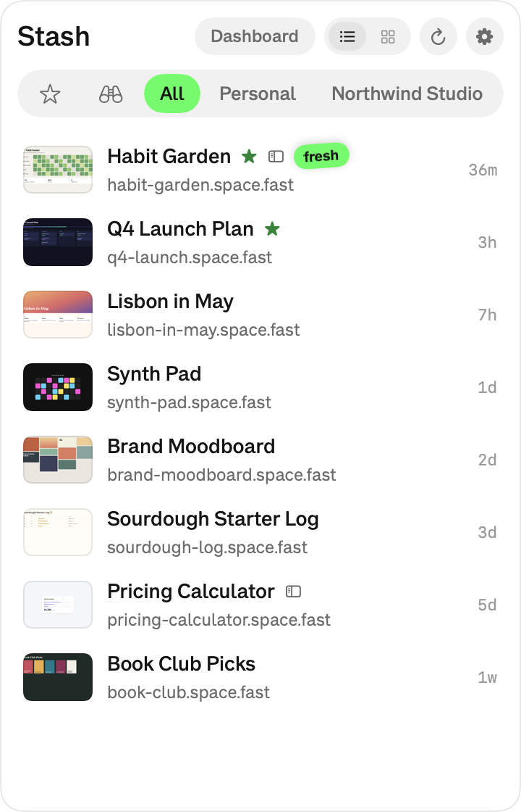
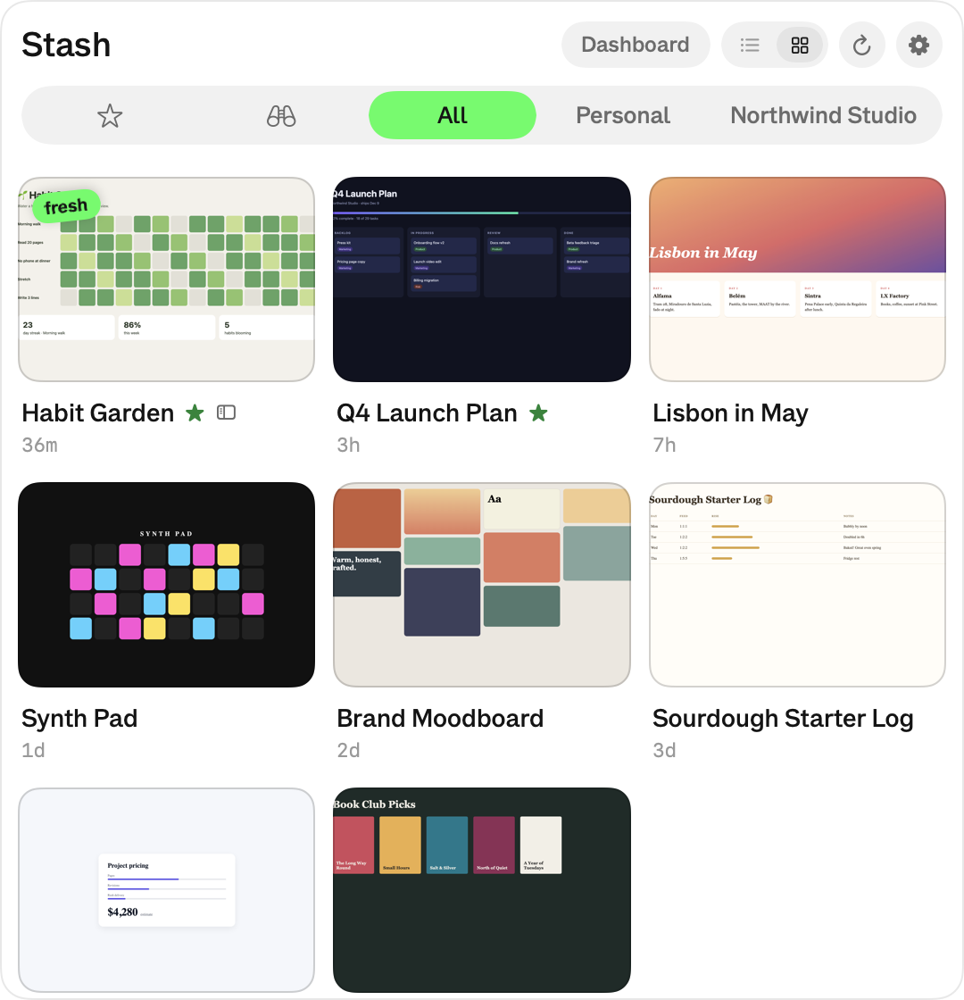
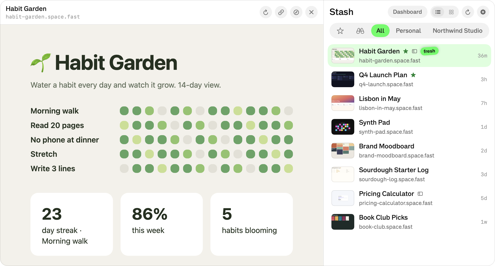

Stash is a tiny Mac app that keeps your Spacefast Spaces in the menu bar. Your newest ones, every team, and a screenshot of each, right up top.
Free · macOS 15 or later · Apple silicon and Intel · 2.2 MB

You make pages with agents all day. Finding last Tuesday's shouldn't mean digging through a dashboard.
The Spaces you just made sit at the top, with when you made them.
Personal, work, that side project. Flip between them, or see everything at once.
The grid shows a screenshot of every Space. Your eyes find it faster than your memory.
Favorites get their own tab, so the Spaces you use daily are always one click in.
Arrows to move, ⌘← ⌘→ for teams, Return to open, ⌘C to copy the link. Press ? for the rest.
The Discover tab brings in Spaces people are sharing on Spacefast, with a dot on what's new since you last looked. Not your thing? Hide it.
Drag the edge to make it as big as you like. It remembers.

One more thing
Open a Space right there in the menu bar. It slides out beside the list: a habit tracker, a calculator, a dashboard, a click away and never lost in a browser tab.
Right-click any Space › Always Open In › Stash. Or make it the default for all of them.

Three steps, one of them because macOS is careful. Stash signs in read-only: it can see your Spaces, never change them.
Drag Stash.app into Applications.
It isn't notarized yet, so macOS asks first. Open it once, then go to System Settings › Privacy & Security and click Open Anyway.
Click the new icon in your menu bar, then Sign in with Spacefast. Approve the code in your browser and you're in.